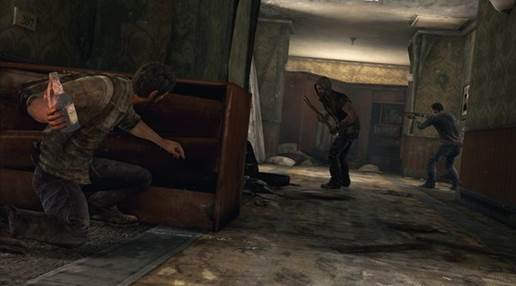
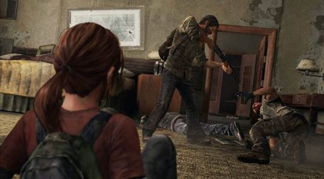
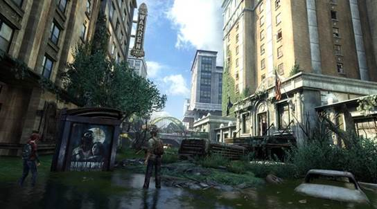
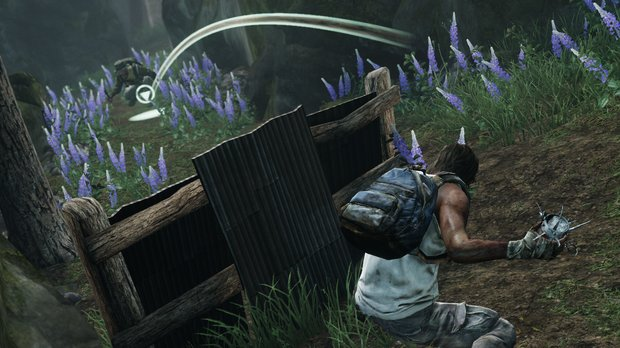

While the meat of the action takes the form of brutally demanding encounters with the human and less-than-human threats inhabiting the no man’s land outside of America’s fortified cities, that’s literally and figuratively only half the story. The Last of Us is billed as "survival action," and the ceaseless realisation of the former concept makes every second of the game a thrilling, emotionally pounding and intellectually nourishing experience.
Built around a solid stealth system driven by line-of-sight, The Last of Us’ action encourages an entirely player-driven approach to almost every encounter. Provided he can scavenge the gear needed to build and feed them, Joel has a healthy array of potential tools at his disposal, ranging from firearms to Molotov cocktails and nail-bombs. The most powerful weapons he has though, are thought and tactical adaptation. And that makes every encounter in the game fresh, exciting, terrifying and deliciously unpredictable.
Wide, sprawling, multi-leveled environments encourage and reward creative play at every turn. All of Joel’s tools have great versatility, able to be used directly or more cleverly for misdirection. While not really a traditional stealth game, direct confrontations, even with the rarity of a fully loaded gun in hand, are unwise. Emphasising the worn-out, desperate state of the world, ammo is in painfully short supply, even from enemy drops. With no fancy silenced weapons available, firing even a single shot is akin to sending up a flare inviting enemies to Joel’s location. Instead, it’s best--and far more satisfying--to play cat-and-mouse with the sophisticated AI, using its knowledge of your last location to herd it around and manipulate its behaviour, hanging on by your fingernails to stay just one step ahead and maintain an advantage. It’s as exciting to the brain as it is to the adrenal gland.
The items that fuel the crafting system require studious searching of the environment to acquire. And even when you have the bits, crafting takes real, in-game time. As does using the manual healing system, assuming you’ve made enough health kits. Go into a fight unprepared, and finding a safe place to resupply becomes a life-or-death challenge in itself.The Last of Us Remastered improves an already excellent game? Here are the differences you can expect to find in the PS4 release.
That’s the wonderful thing. This isn’t a set of separate, isolated elements. It’s made up of a whole stack of disciplines and possibilities, working together organically to create a deep, layered, ever-changing, and constantly stimulating whole. Options are always open, every move has an equal risk and reward, and with no rules or penalties governing your approach, any decision that keeps you alive is the right decision. But with Ellie by Joel’s side throughout, each choice comes loaded with a weighty sense of responsibility.
But as stated, that’s only half of the story. Because part of the reason The Last of Us’ violent encounters remain so tooth-rattlingly affecting is how sporadically placed they are throughout the game. The resonance of the (necessarily) brutal violence never dissipates through over-repetition, but more so, the slow-burning nature of the game’s pacing infuses every encounter with immense emotional weight.
This is a game of extended, ambient travel sequences and powerfully underplayed character development. The vast, gorgeously decaying vistas of a world reclaimed by nature are a constant reminder of both the weight of Joel and Ellie’s quest and the necessity of vigilance and violence at all times. They’re also a source of visual wonder, bringing out joy and confusion in Ellie while reminding Joel of a better past. In these quieter sections, be they meandering environmental puzzles in which Joel finds ways for the less capable Ellie to progress, or simply lengthy treks through the urban wilderness of a society long-since collapsed, the immense quality of the game’s writing and performances really shines.

The slow exploration of an abandoned town might spark up equal excitement and sadness in Ellie as she discovers the long-dead remains of a world she never got to know. Her playful instinct might take over as she explores an abandoned neighbourhood while Joel hunts for supplies. And the game’s narratively minded treatment of even mundane tasks ensures that the frequent scavenging never becomes tedious busywork.
Apparently empty areas are often the ones most packed with content. Not much might seem to happen while exploring a deserted plaza for gear, but these are the times that ambient, environmental storytelling will most frequently trigger quietly significant exchanges between the two leads.
As such, the high stakes, low resources and knowledge that anything could be around the next corner feed directly into the importance of each and every trinket found. You only survive by what you bring to the equation, giving every life-saving bomb or trap a personal significance. Particularly if the parts used to build it came from the hands of a dead family making a similar survival bid to Joel and Ellie’s. There might be a great deal of downtime between the action, but the game never rests.

It’s the interplay during minute, delicately sketched events like these that brings about the many subtle interactions through which the characters’ personalities and viewpoints gently rub off on each other, gradually but completely transforming the two and their relationship. Ellie’s curiosity at a world Joel is trying to forget slowly forces him to modify his outlook and actions, while his weary, coldly logical demeanour starts to inform Ellie’s approach.
And all of this feeds straight back into both gameplay and tone: Ellie’s hardening makes her an increasingly useful combat aid, while also raising uncomfortable questions about what she might be turning into--questions you’ll be forced to address every time she bricks an enemy in the head to help you stay alive. It’s a violent game, but also sometimes a game about violence, and that’s a rare and worthy achievement indeed.

Yes, The Last Of Us does have a competitive online component, and it’s far from the hastily cobbled together addition some might expect. Rather, Factions mode proves itself to be surprisingly adept at crafting thoughtful team deathmatches.
Split into two modes (Supply Raid and Survivors) two teams of four players are pitted against each other with a finite number of lives. In the former, each side has 20 lives rationed out between its members; the first team to wittle the other’s number down to zero are declared the winners. Survivors goes one further and completely does away with respawns all together over desperately tense three minute rounds.
Compliments to Naughty Dog for creating a multiplayer that defies convention and focuses on slow-burning strategy. The emphasis is very much on survival first, reckless killing a distant second. In that sense, Factions captures the ideology of single-player beautifully, even if it is unlikely to capture the COD crowd. If you're planning on jumping back into multiplayer in the PS4's Remastered version of the game, be aware that your PS3 progress won't carry over.

Built of a culmination of everything that action gaming has grown to become over the last eight years, The Last of Us is the definitive statement on what the genre has achieved thus far. Made of wildly eclectic gameplay mechanics polished to a sheen, bound intelligently and movingly to one of the most affecting narratives in games, The Last of Us succeeds where so many pretenders have failed.
It combines DNA strands from across the genre, yet reworks and recontextualises them to become far more than the sum of its parts. Its storytelling is peerless, as affecting and multi-layered as it is grounded, underplayed and real. In terms of everything the modern action game has strived to be, The Last of Us is the full-stop at the end of the sentence, leaving no more to be said. Until next-gen. If this is our starting point for that, then the next five to ten years could be truly amazing.